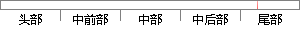

一开始两个任务分别打印自己的优先级号，当一个任务被挂起后，只有一个任务在运行，当被挂起的任务恢复后，才有两个任务运行。
片段位置图

相似结果
相似片段： 正在运行的任务可以通过调用两个函数之一将自身延迟一段时间,这两个函数是...当任务因等待事 件被挂起(Pend),下一个优先级最高的任务立即得到了CPU的控制...
| 标题 | 《UCOS任务状态分析_嵌入式之路_百度空间》 |
| 对比库 | PaperRater云论文库 |
| 网址 | http://hi.baidu.com/embedtec/item/ef7d9611e7c5f20dd1d66de9 |
| 相似率 | 65.91% （轻度抄袭） |
※ 片段修改建议 ※
近似词参考：- 恢复：规复
- 分别：别离 划分 离别
- 任务：使命 义务
- 自己：本身
- 只有：怜惜
系统自动生成语句： 一开始两个使命别离打印本身的优先级号，当一个使命被挂起后，怜惜一个使命在运行，当被挂起的使命规复后，才有两个使命运行。
注：本片段修改建议为系统自动生成，仅供参考。